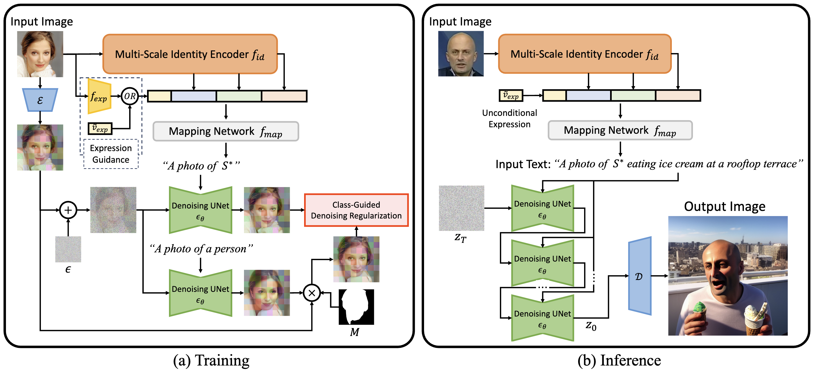

Face2Diffusion
(a) During training, we input a face image into our novel multi-scale identity encoder fid and an off-the-shell 3D face reconstruction model fexp to extract identity and expression features, respectively. The concatenated feature is projected into the text space as a word embedding S* by a mapping network fmap. The input image is also encoded by VAE's encoder E and then a Gaussian noise ε is added to it. We constrain the denoised latent feature map to be the original one in the foreground and to be a class-guided denoised result in the background. (b) During inference, the expression feature is replaced with an unconditional vector v˜exp to diversify face expressions of generated images. After injecting the face embedding S* into an input text, the original denoising loop of StableDiffusion is performed to generate an image conditioned by the input face identity and text.
Comparison with Previous Methods

Our method generates authentic images aligned with input texts and identities in challenging scenes whereas previous methods compromise an either.
Ablation Study
(a) Our MSID encoder disentangles camera poses while keeping the identity similarity. (b) Our expression guidance mitigates overfitting to input face expressions. (c) Our CGDR improves the text-fidelity mainly on backgrounds.
BibTeX
@inproceedings{shiohara2024face2diffusion,
title={Face2Diffusion for Fast and Editable Face Personalization},
author={Shiohara, Kaede and Yamasaki, Toshihiko},
booktitle={Proceedings of the IEEE/CVF Conference on Computer Vision and Pattern Recognition (CVPR)},
year={2024}
}